SEANET 2004

Bangkok Tahiland
19.Nov-20.Nov.2004
32th Annual SEANET Convention
| ◎ 第32回SEANET Convention 2004(South East Asia Net Convention)が11月19日-21日の3日間、 タイ(HS)のバンコク(Bangkok)で開催された。 仏教と寺院の国、タイの首都バンコクで開催されるSEANET・2004は今回で32回目を迎える。 タイは日本との時差は2時間。東南アジアの国の中でも物価が安いので日本からの観光客も多く、 この時期はホテルも、往復の航空機も満杯の状態だった。 タイの11月は乾期で日中の気温は30度を超えるが、意外に湿度が低いためそれほど暑さは感じない。 「タイ王国」の名前の通り、立憲君主制の国。元首はプーミポン・アドゥヤデート国王(ラーマ9世)。 街中には至る処で特徴のある寺院の屋根を見る事が出来る。 |
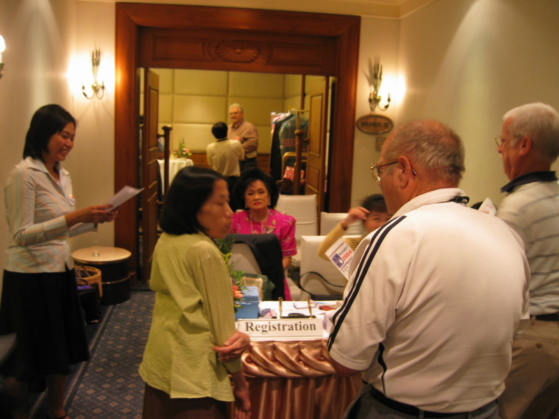
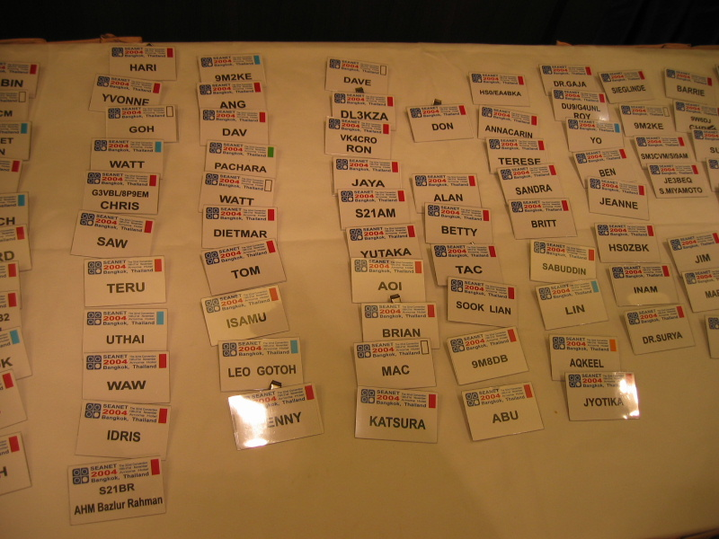
|
SEANET・2004の会場となったArnoma・Hotelは、Bangkok市内の中心部のショッピングエリアに近い場所に位置する全361室の高級ホテル。
客室、会議室など整っているこのホテルが今回の会場となった。
SEANET・特別局のHS72Bもこの22階に設置された。
HS72Bの特別局のコールサインはタイ国王妃・シリキット王妃の72歳の誕生日を記念したもので、
今回はWARCバンドも特別に運用が許可された。 50MHz帯は"52MHz帯"がTVのチャンネルに使用されているとの理由で残念ながら許可されなかった。 市内を巡っていても52MHz帯のTVアンテナらしいものが家々の屋根に数多く見られたので、 実際にTV放送に使われている事が判る。
SEANET CONVENTION 2004 |
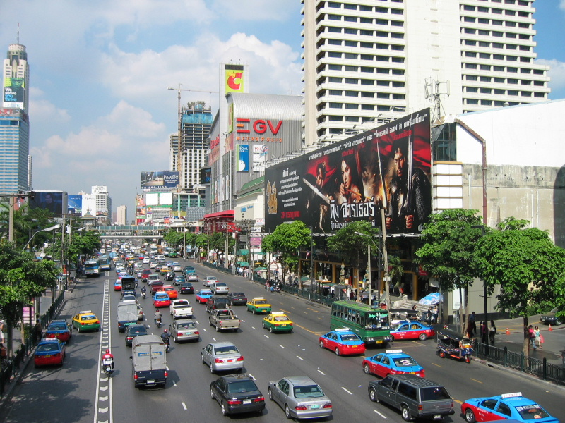
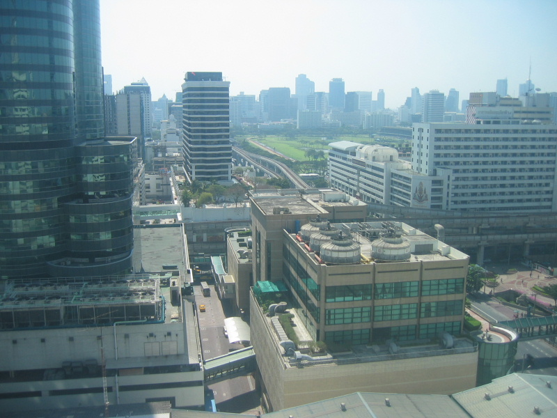
◎ SEANET 2004 Programes
19th November(Friday) 2004
11:00-19:00 Registration at the Arnoma Hotel Bangkok and free time.
19:00-19:30 CQ SEANET from HS772B the conventions'special event radio station.
19:30-21:30 Welcome dinner and Thai cultural entertainment-Arnoma Grand Room.
20th November(Saturday) 2004
08:30-09:00 Group photograph-Arnoma Grand Room.
09:00-16:30 Sightseeing programme-detaile to be announced.
16:30-19:30 Free time.
19:30-23:00 Grand Dinner-ArnomaGrand Room.
Country Presentations(Representatives from each country may propare
an informal song or dance etc.for the entertainment of guests(optional)
21th November(Sunday) 2004
=Arnoma Grand Room=
08:30-10:30 Technical Presentations
(1)"Amaterur Radio Development in Thailand"=Professor Kunchit HS1JC.
(2)"Thailand Contesting and DX-Peditions" by RAST/HSDXA group.
10:30-11:00 Coffee Break
11:00-12:00 Plenary Session-discussion and country bids for the 2006 SEANET Convention-voting.
12:00 Farewell Lunch.
|
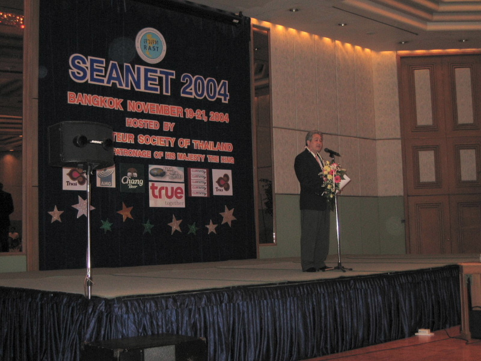
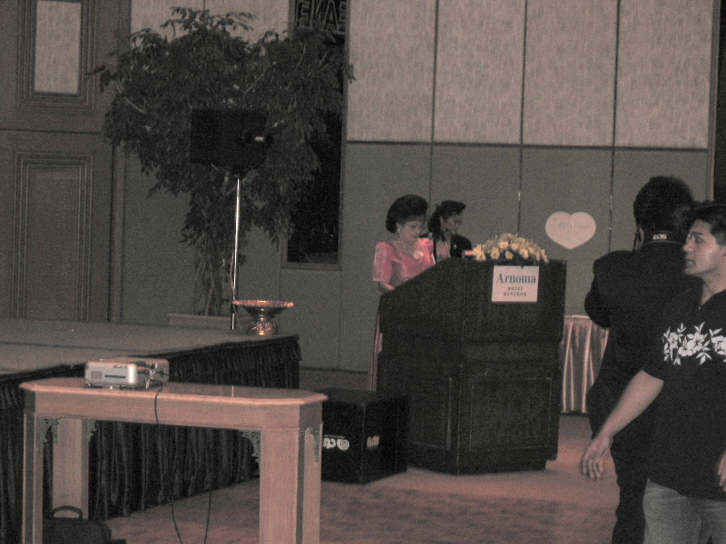
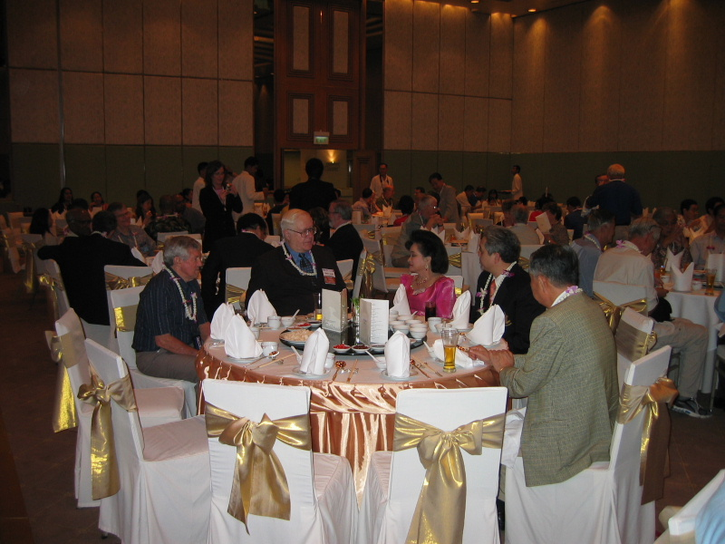
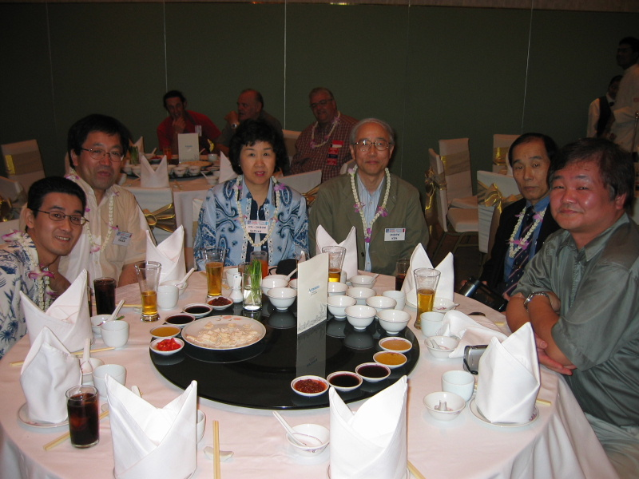
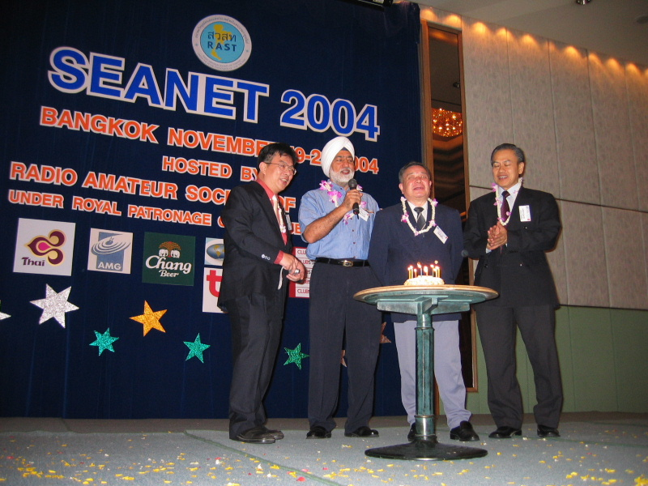
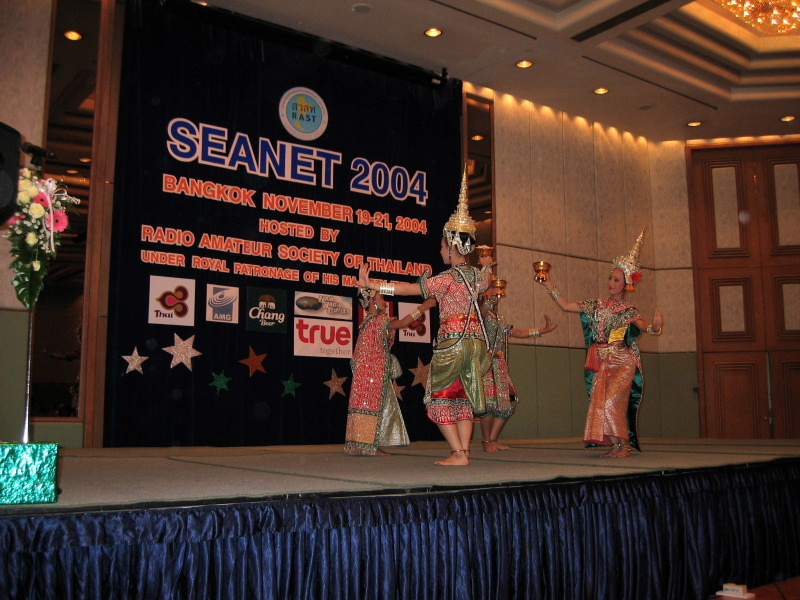
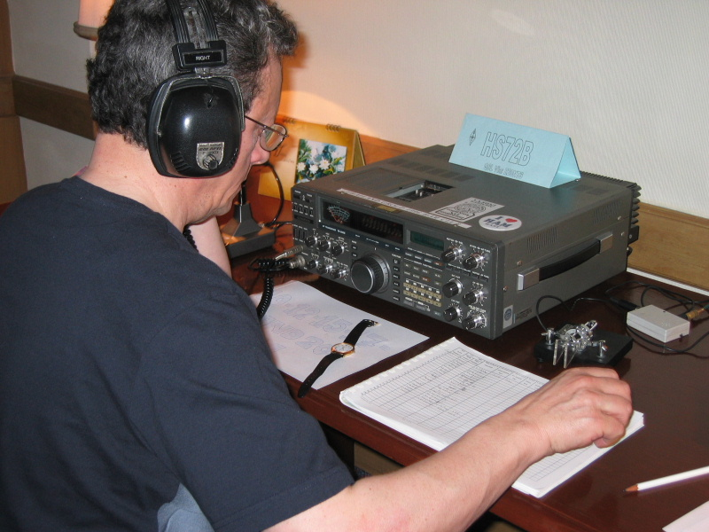
|
◎ Bangkok City Tour(11/20) 参加者全員の集合写真撮影の後、3台のバスに分乗してバンコク市内の観光に出発。 最初はチャオプラヤー川に近いワット・プラケオ王宮周辺のワット・ポー、ワット・マハタートの寺院を周辺を見学。 昼食を挟んでラーマ5世が暮らしたウィマンメーク宮殿(Vimanmek mansion)等を見学、市内を巡る観光を楽しんだ。 |
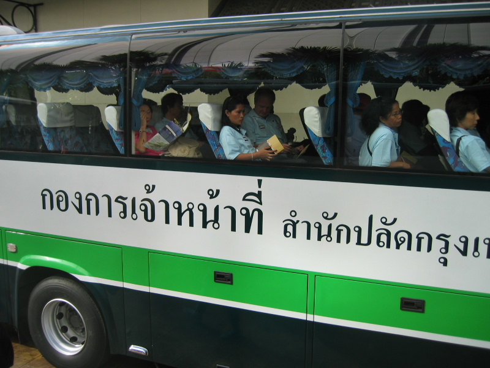
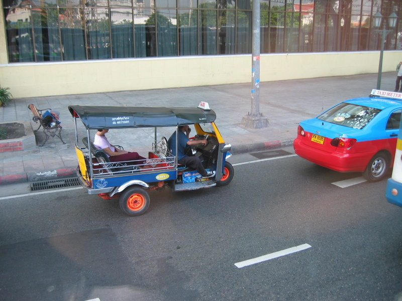
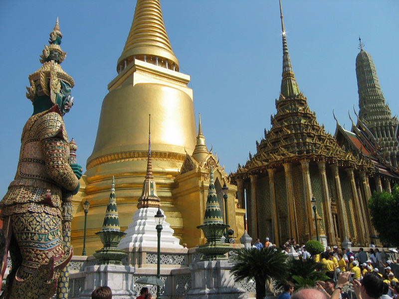
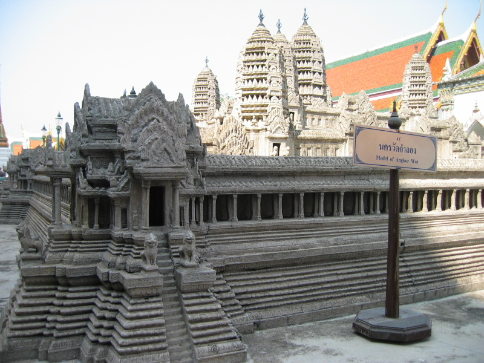
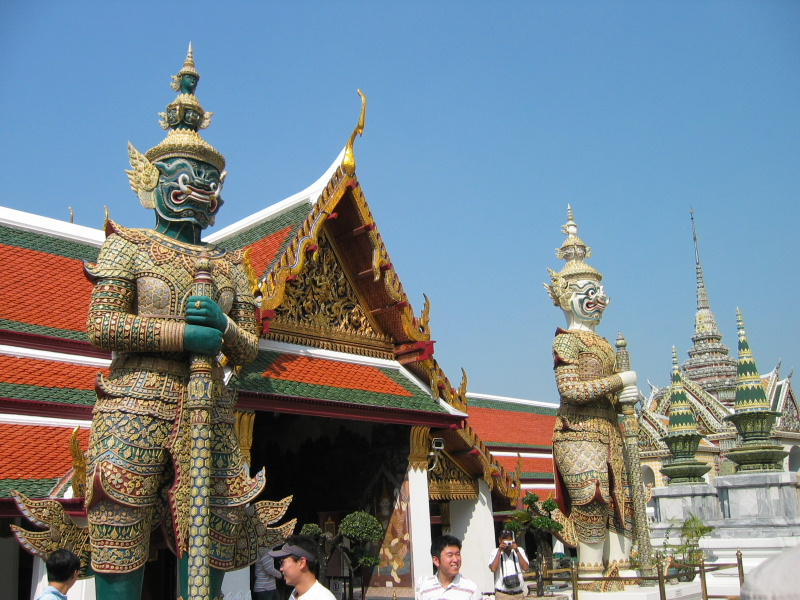
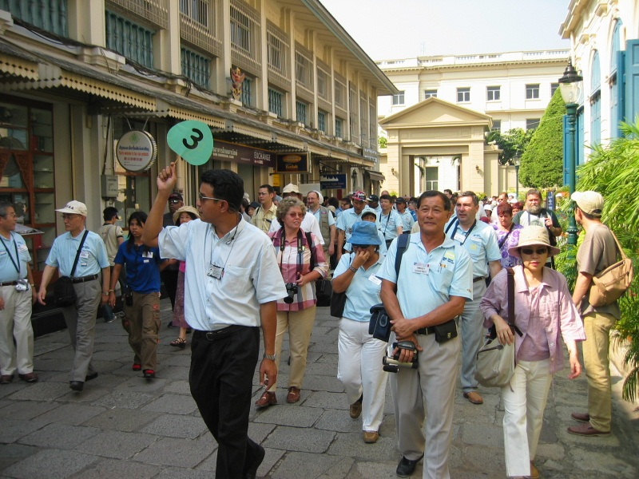
| Grand Dinner & Eye Ball QSO |
|
◎ SEANET最終日の11月21日(日)は午前9:30時からHS1JC・Kunchit氏による「Amateur Radio Development in Thailand」と題しての講演。 続いて地元RAST/HSDXA Groupによる「Thailand Contesting and DX-Pedition」と題して、IOTA移動運用の模様などがビデオ、スライドを使って報告された。 最後は2006年の次々回(2005年度はインドのバンガロールでの開催が決定)のSEANET開催地を決める議題に入った。 2005年の開催場所では、日本とインドから意志表示があり、参加者全員の挙手による"採決"でインド開催に決まったが、 今年もJA3AER・荒川氏から"大阪・かんさい"での開催招請の誘致説明がスライドを交えて行われた。 今回は他の立候補が無く、参加者全員による拍手による採決で2006年は"日本(大阪・かんさい)"での開催が決定した。 |
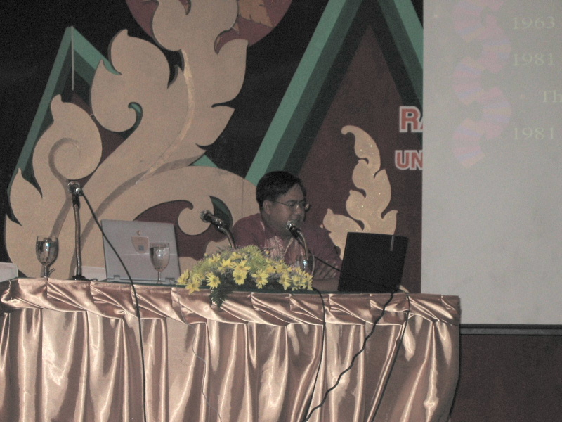
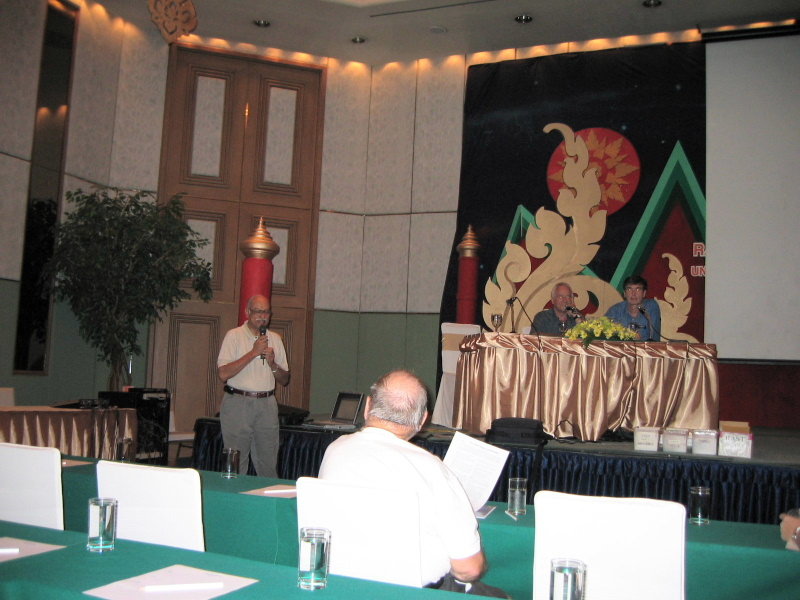
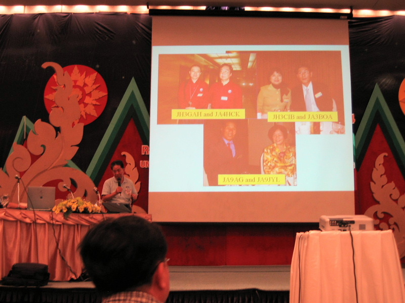
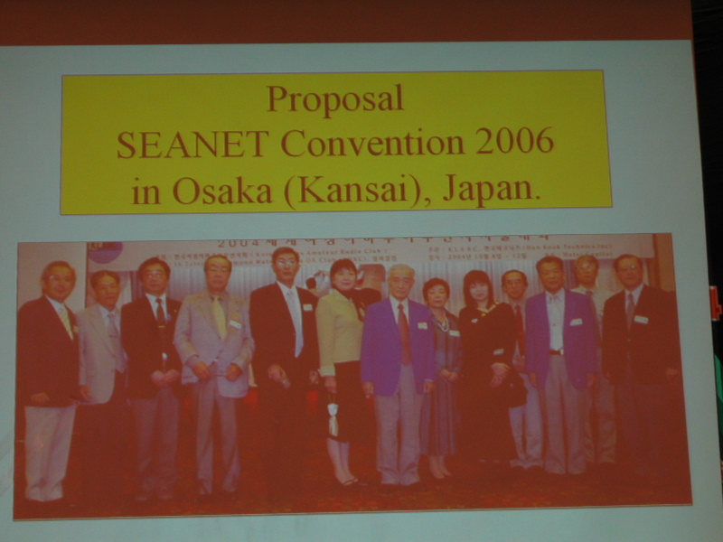